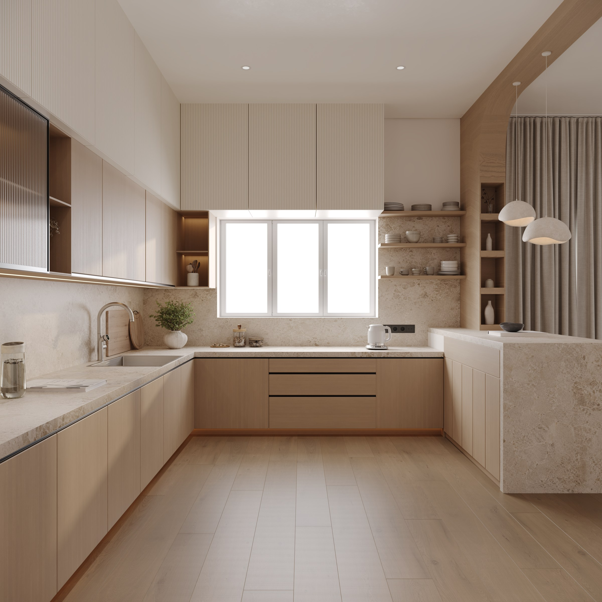
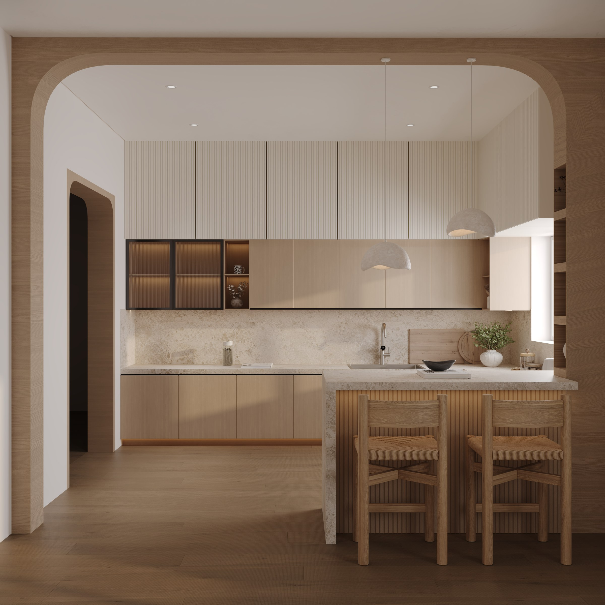

A warm contemporary residence shaped by soft neutral tones, natural wood, tactile textures and carefully balanced lighting. The visualization focuses on creating a calm, refined atmosphere while highlighting the materiality and character of each space

Have a project in mind? Let’s talk about your requirements, references and visual direction.
START A PROJECT